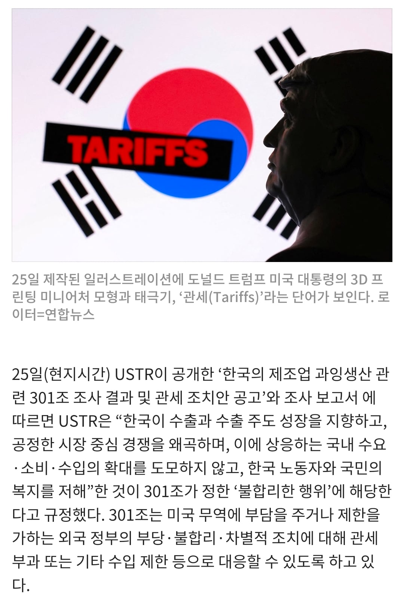
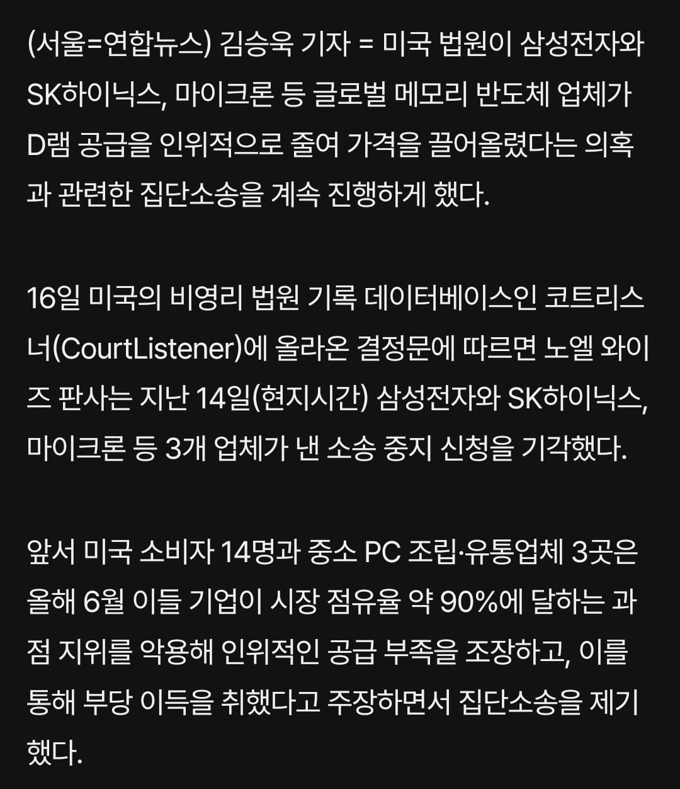

국가주도로 막대한 케파를 조성해 시장중심경쟁을 왜곡하는 파렴치한 짓이라 어쩔 수 없이 관세를 때렸다고함

근데 ddr5 수요 대응으로 레거시 라인 클로즈한건 담합이니 줘 팰 예정임
얼탱

국가주도로 막대한 케파를 조성해 시장중심경쟁을 왜곡하는 파렴치한 짓이라 어쩔 수 없이 관세를 때렸다고함

근데 ddr5 수요 대응으로 레거시 라인 클로즈한건 담합이니 줘 팰 예정임
얼탱
지랄 애플때문에 이렇게 된건데 뭔 독점적 지위같은 소리하고있네 ㅋㅋㅋ
미민당 씨발아 좀 줘패봐 선거 이겼잖아
한국사람들이 제일 착각하는게
미민당은 한국에 우호적일거라고 생각함
현실은 미민당이 한국을 더팼으면 더팼지 덜패진 않음
전통적으로 미민당은 한국 패싱하고 일본에 몰아줬었음
트럼프가 이례적인 케이스로 한국이랑 딜하고 기브앤테이크를 해주던 편이었고
호남 워딩한건 미국이 나름 한국 신경써서 국가전략산업으로 장난질 그만하고 선 지키라고 리스크관리 들어가는거
언제나 한국에 우호적이고 힘 실어준건 미민당이 아니라 공화당이었음
그리고 외교권은 대통령 관할이라 내부 영향력을 잃어도 트럼프가 거부권 행사하면서 그대로 밀고나갈거임
진짜 트럼프 병신새끼때문에 다 개판이네
조져야지
호남빈도체 같은 소리하면 박살내야지
미국 영토 내에서 생산하면 교란행위가 아니고?
호남에 짓지 말고 미국에 지으라시잖어ㅋㅋㅋㅋ
걍 ㅂㅅ임 전라민국
아니 결론이 이렇게 가는게 맞나??
베충이한테 뭘 바래
혹시 고향이...
공항부지에 미공군 절대 안빼겠네 ㅋㅋㅋ
사업 망한걸로 보면 되겠읍니다.
제일 중요한 변수를 '일단 됐다 치고' ㅋㅋㅋㅋㅋ

관세맞자
ㅋㅋㅋ미군반대 미국원수 외치는 지역인데
문구 더 독해지겠네
아니 지금 찌라시가 도는데..믿을 수없는 내용임 애먼데다 짓는걸로 계획을 튼것같은..
뭔데뭔데
기레기랑 똑같은짓 하노?ㅋㅋ미국이 ‘호남반도체’ 라고 ㅈㄹ함???ㅋㅋ
? 기사 내용이 내용이 없는데 기사 링크라도 달아두둔지 해야지 뭔
무슨 ㅋㅋㅋ
아니 캐파 늘리는 게 시장 교란이야? ㅋㅋㅋㅋ
교란은 좆럼프가 하고있고요
너네 생산량 늘렸으니까 관세라는 건가?? ㅋㅋㅋㅋㅋㅋ
남의나라 신경쓸 시간에 종전조건으로 이란한테 뭐 줘야할지나 걱정해라
코에걸면 코걸이 귀에 걸면 귀걸이
지랄한다 ㅅㅂ 암살 개마렵노
그럼니네는 사지마
마이크론 인텔 살려주기: ??
근데 그냥 반도체패권땜에 걍 견제들어오는거라 쩔수긴하긔